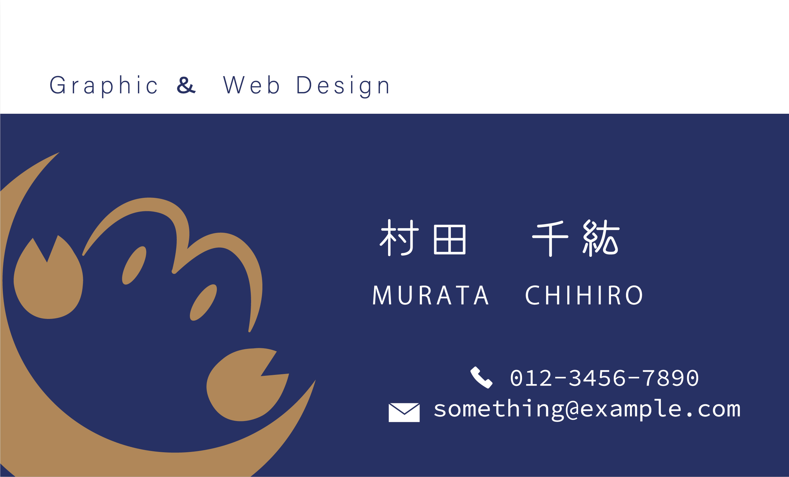
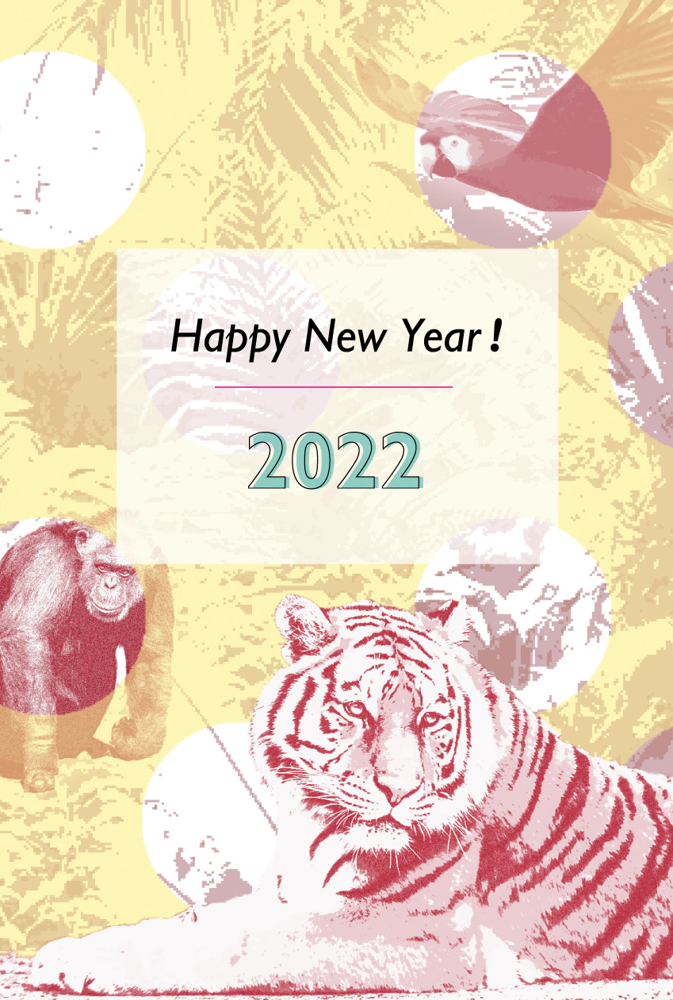
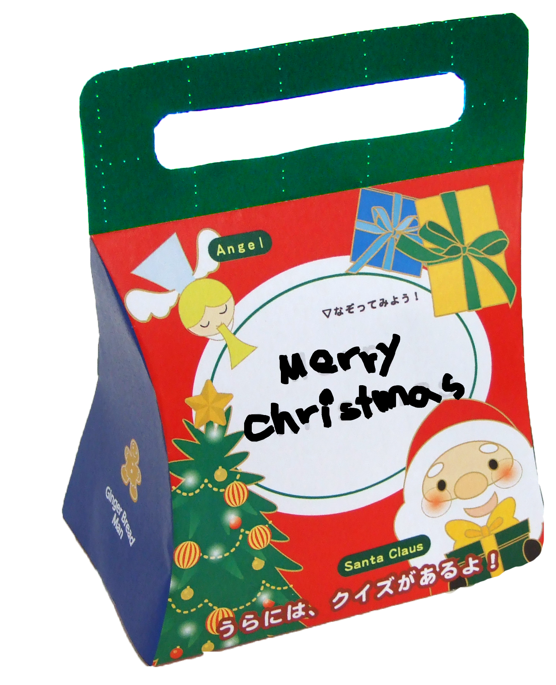
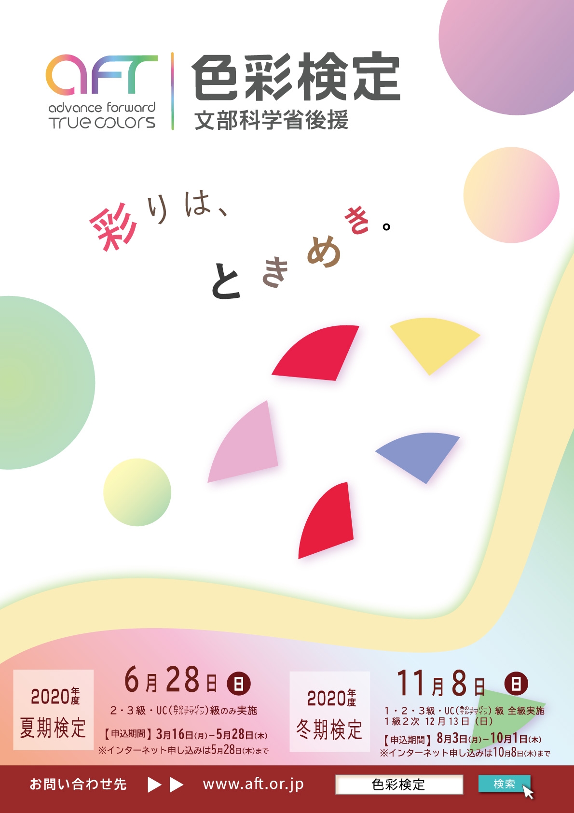
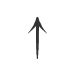

やまもと ちひろ
Web Design
手掛けております。
Graphic Design
※掲載作品は自主制作物中心になります。


Business Card
フォーマルなベースカラーに
ちょっぴり遊び心を
自身の星座である蟹とイニシャル C・Mを用いて作成したロゴを大胆 に配置しました

New Year's Card
年の始まりの力強い決心を 応援するジャングルの野生動物
写真を赤系の色に加工し黄色い水玉を差し込み、 POPで明るいイメージに仕上げました。

Package for Christmas
楽しく英語に触れる クリスマスお菓子用パッケージ
油性マジックなどで表面の文字を なぞって完成します。 裏には英語クイズがある楽しめる パッケージです。

Flyer
幸福な場面を創造する色彩とその広がる可能性を表現
色彩の検定告知用チラシのコンセプト設定・デザインをしました。
